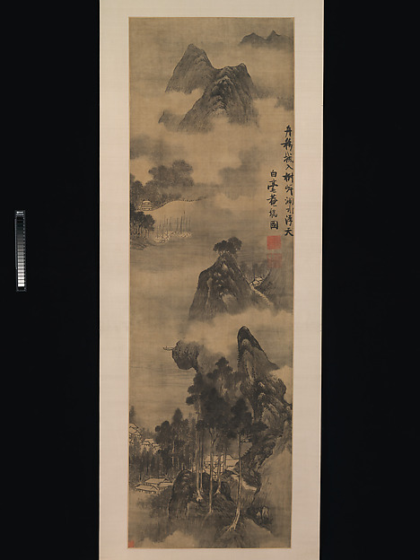
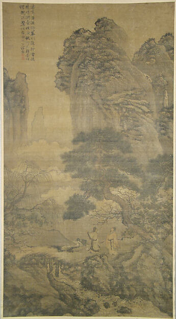
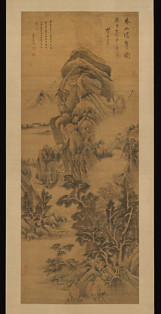
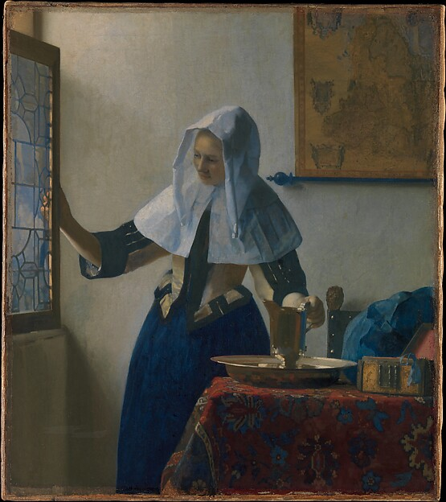
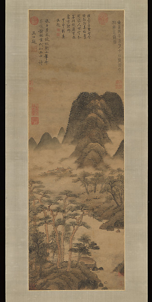

01
学习进度
连续 6 天 · 正确率 78%
6天
正确率 78% · 累计 34 天 · 最长 11 天
01
学习进度
最近 7 天完成 5 天，错题 12 道还在队列里。这里只看大概，细账在进度页。
鼠标左右移动，卡片跟着走一圈。第一下点开看细节，第二下才进去。

最近 7 天完成 5 天，错题 12 道还在队列里。这里只看大概，细账在进度页。

还剩 4 道：2 道客观题、1 道图像辨识、1 道名词解释。其中 1 道是昨天错过的复习题。

春山图（局部）还没写；《隐秘的知识》第四章摘录未读；开放问题可以留空。
今天有一道题：德加为什么把画面停在"未完成"？

此作最可能出自谁之手？请依据光色、空间与笔触判断。
「吴带当风」形容的是哪位画家的用笔风格？
请解释：「有意味的形式」
「什么时候该停笔」是一个判断，不是一个事实。提香晚年任由颜料堆在画布上，塞尚在写生中反复涂改，德加干脆把画面停在"未完成"。请结合一位画家的具体作品、以及你自己的作画经验，论述：完成感究竟从哪里来？

“我们之所以认为某幅画‘看上去很真’，往往不是因为画家画得准，而是因为他恰好符合我们被训练过的观看习惯。”
瓦萨里把绘画史写成"不断逼近自然"的进步史；可二十世纪初的画家却主动拆掉了线性透视。请论述：从"征服自然"到"拆解自然"，这一转向是绘画的退步，还是它对自身媒介的自觉？